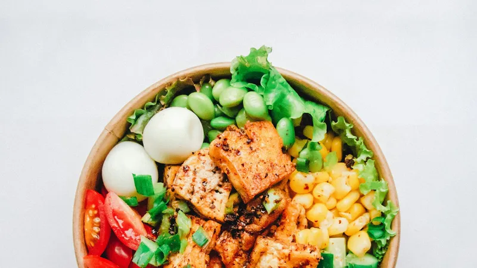
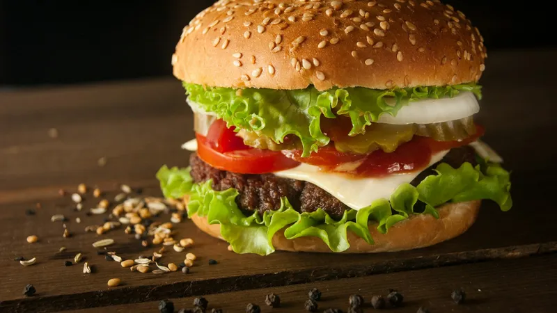

أصبح مونجارو (Mounjaro) واحداً من أكثر أدوية خسارة الوزن طلباً في العالم، ونتائجه مذهلة فعلاً — لكن الحقيقة التي قلّ من يتحدث عنها هي: الدواء وحده لا يكفي. نصف النتيجة يأتي من الحقنة، والنصف الآخر يأتي من طبقك.
في هذا الدليل سأشاركك خطة غذائية عملية أثناء علاجك بمونجارو: ماذا تأكلين، ماذا تتجنبين، ولماذا؟ مع جدول وجبات كامل ونصائح تمنع أكثر شكوى مزعجة مع هذا الدواء — الغثيان.
لماذا يختلف نظامك الغذائي مع مونجارو؟
قبل القوائم، يجب أن تفهمي ماذا يحدث في جسمك عند أخذ الحقنة. مونجارو (تيرزيباتيد) يعمل على مستقبلين هرمونيين في آن واحد (GLP-1 وGIP)، فأهم تأثيراته:
- تبطئة إفراغ المعدة — الطعام يبقى في معدتك أطول، فتشعرين بالشبع بسرعة كبيرة
- تقليل الشهية المرتبطة بالدماغ — الرغبة القهرية بالأكل تقل بشكل ملحوظ
- تحسين الإحساس بالجوع والشبع — تسمعين إشارات جسمك بوضوح أكثر
القاعدة الذهبية: مع مونجارو، معدتك "تشتغل ببطء"، فإذا أكلتِ كما كنتِ تأكلين سابقاً، ستشعرين بالانتفاخ والغثيان. التغيير ليس خياراً — إنه ضرورة علاجية.
القواعد الذهبية الخمس أثناء العلاج
1. البروتين أولاً في كل وجبة
مونجارو يخفّض الشهية وقد يخفّض كمية البروتين التي تدخل جسمك تلقائياً. خسارة الوزن بدون حماية الكتلة العضلية = أيض أبطأ وترهّل. اجعلي البروتين نصف الطبق في كل وجبة.
2. وجبات صغيرة متكررة
بدل 3 وجبات كبيرة، تناولي 5-6 وجبات صغيرة. هذا يقلل الغثيان ويحافظ على استقرار السكر.
3. اشربي الماء قبل الأكل بنصف ساعة
هدفك 2-3 لتر يومياً. الماء مع الطعام مباشرة يزيد الامتلاء والانزعاج — استهلكيه بين الوجبات.
4. ابدئي ببطء واستمعي لجسمك
ابدئي النصف الأول من الوجبة ببطء، انتظري 10 دقائق، ثم قرري إذا كنتِ تحتاجين الباقي. الإفراط مصدر الغثيان الأول.
5. لا تحذفي الطعام نهائياً — استبدليه
الحرمان يوقظ الشراهة. الاستبدال الذكي هو ما يجعل النظام مستداماً.
ماذا تأكلين على مونجارو؟
ركز اختيارك على أطعمة سهلة الهضم، غنية بالعناصر، ومنخفضة الدهون المهيّجة:

| المجموعة | أمثلة | لماذا؟ |
|---|---|---|
| البروتينات الخالية من الدهون | صدور الدجاج، السمك، التونة، البيض، الزبادي اليوناني، البقوليات | حماية العضلات والإحساس بالشبع |
| الخضار المطبوخة | البروكلي، الكوسا، الجزر، السبانخ، الخيار والطماطم | ألياف خفيفة سهلة الهضم وملء للطبق دون سعرات زائدة |
| الحبوب الكاملة بكميات معتدلة | الشوفان، الأرز البني، البرغل، البطاطا المسلوقة | طاقة ثابتة وسكر مستقر — نصف كوب لكل وجبة كحد أقصى |
| الدهون الصحية بكميات صغيرة | زيت الزيتون، الأفوكادو، اللوز | صحة القلب والهرمونات دون دسامة تزعج المعدة |
| الفواكه منخفضة السكر | التفاح، التوت، البرتقال، الجوافة | حلاوة طبيعية وألياف |
| السوائل | الماء، الأعشاب، الشوربات الصافية | الترطيب ومكافحة الإمساك |
ماذا تتجنبين أثناء العلاج؟
هذه الفئة ليست "ممنوعات أبدية"، لكنها العناصر التي ستجعل تجربتك مع الدواء صعبة ومعرقلية لنتائجك:

| تجنبي | السبب |
|---|---|
| الأطعمة المقلية والوجبات السريعة | الدهون العالية تبطئ الهضم فترتفع احتمالية الغثيان والقيء |
| السكريات والمشروبات الغازية والعصائر المحلاة | سعرات فارغة تقفز السكر وتمنع حرق الدهون |
| المخبوزات البيضاء والحلويات | تهيج المعدة وتسبب انتفاخاً سريعاً |
| الأطباق الحارة جداً والتوابل القوية | مزعجة للمعدة البطيئة الإفراغ |
| الكحول | يتفاعل مع الدواء، يرفع الجفاف، ويضيف سعرات |
| الأكل قبل النوم مباشرة | الامتلاء الليلي يسبب حموضة وارتداداً وصعوبة نوم |
نموذج وجبات ليوم كامل مع مونجارو
مثال عملي مطابق للقواعد أعلاه — قيّسه على أسبوعك لإعادة الاستخدام:
| الوجبة | الاقتراح |
|---|---|
| الفطور | زبادي يوناني + نصف كوب شوفان + توت طازج + ملعقة بذور شيا |
| الغداء | صدر دجاج مشوي + بروكلي مطهو بالبخار + ربع كوب أرز بني |
| العشاء | سمك سلمون مشوي + سلطة خضراء بزيت الزيتون والليمون |
نصائح للتعامل مع الغثيان والآثار الجانبية
- اطلبي من طبيبك البدء بجرعة أدنى وتصاعدها تدريجياً — العجلة هنا مصدر الغثيان
- تناولي الزنجبيل أو النعناع أو الشمر عند الشعور بالغثيان
- لا تستلقي مباشرة بعد الأكل — انتظري ساعتين على الأقل
- أضيفي الخبز المحمص والمقرمشات والأرز الأبيض كأطعمة "طوارئ" في أيام الغثيان
- راقبي الجفاف والإمساك — واسألي طبيبك عن الملينات الآمنة عند الحاجة
أسئلة شائعة عن الغذاء مع مونجارو
هل يجب قطع الكربوهيدرات تماماً مع مونجارو؟
لا. يجب تحسين جودتها وكمياتها لا إلغاؤها. شريحة خبز أسمر أو نصف كوب أرز بني يومياً جزء من نظام متوازن يدعم طاقتك وهرموناتك.
متى أزيد البروتين؟
طوال فترة العلاج. الهدف التقريبي: 1.2-1.6 غرام بروتين لكل كيلوغرام من وزنك المثالي يومياً، موزعة على الوجبات.
هل أستطيع ممارسة الرياضة؟
نعم وبشدة، خاصة تمارين المقاومة مرتين إلى ثلاث مرات أسبوعياً للحفاظ على العضلات ورفع معدل الحرق — مع انتباه إضافي للترطيب.
متى يجب عليك التواصل مع الطبيب؟
إذا شعرتِ بقيء متكرر، ألم بطني حاد، علامات جفاف، أو هبوط سكر متكرر، توقفي عن تأجيل الأمر وتواصلي مع طبيبك فوراً. مونجارو دواء فعال، لكنه يحتاج متابعة طبية جادة — ونظاماً غذائياً يقودك فيه مختص.
تذكري دائماً: الحقنة توصل جسمك النصف الأول من الطريق، والنصف الثاني يُصنع في مطبخك. اجعلي كل وجبة خطوة نحو صحتك، وليس مجرد وجبة.